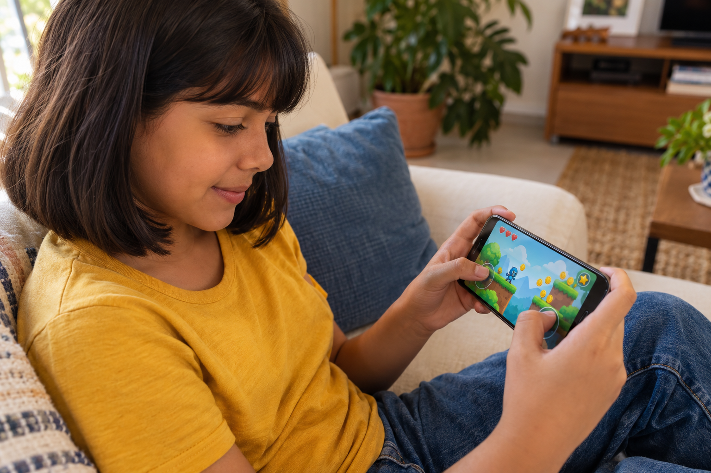
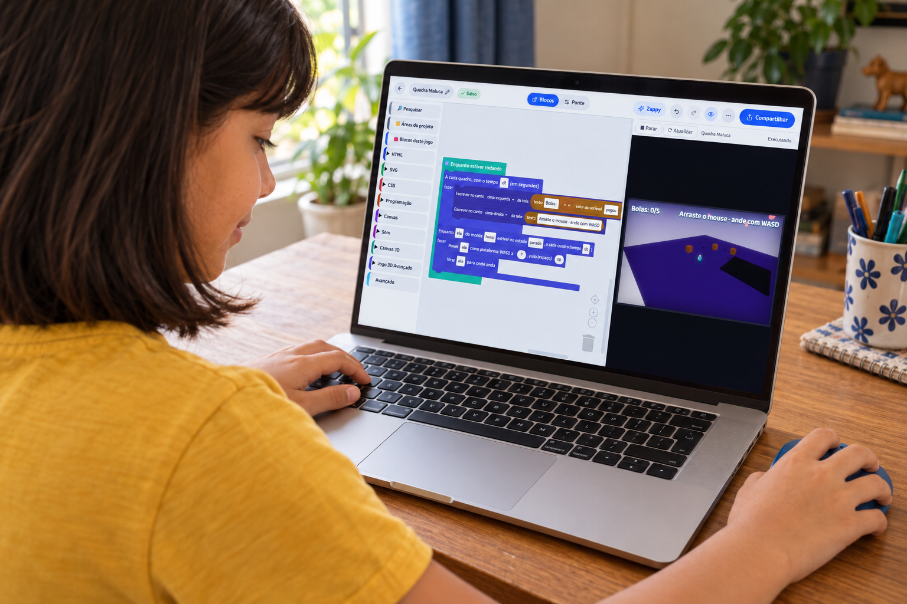
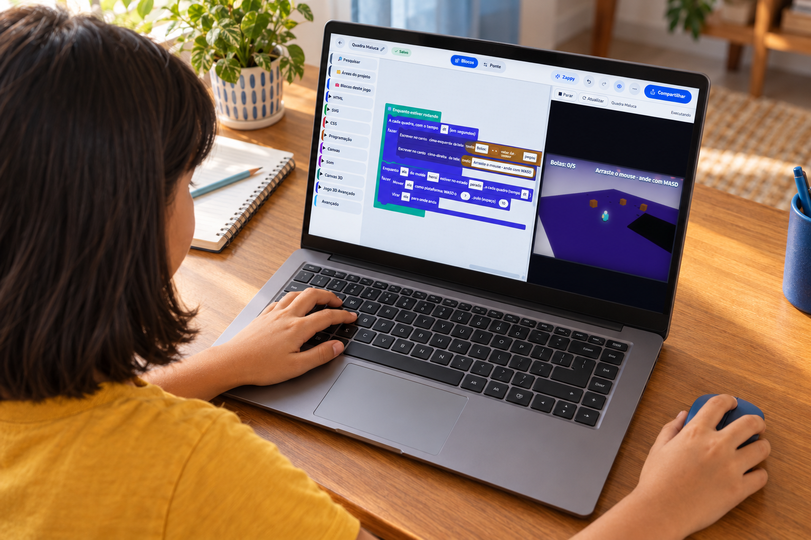
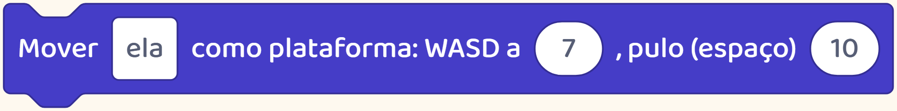
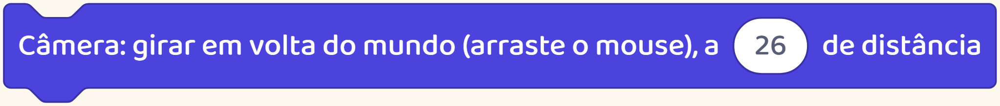
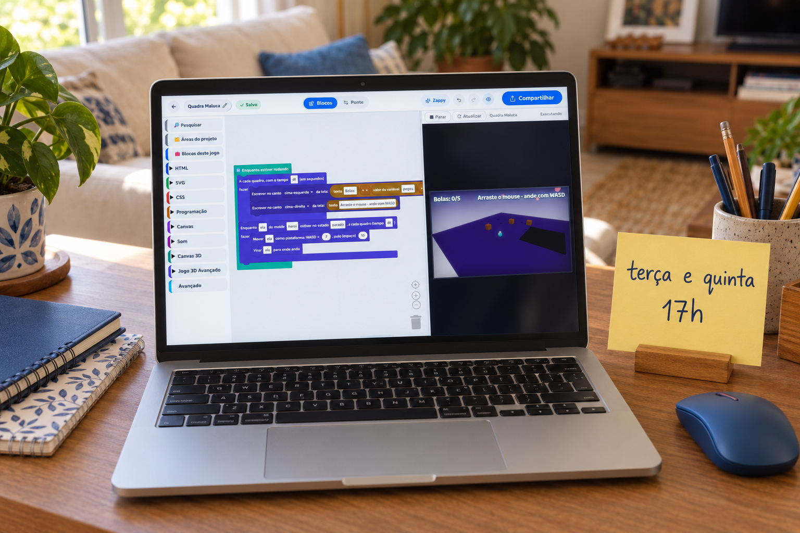
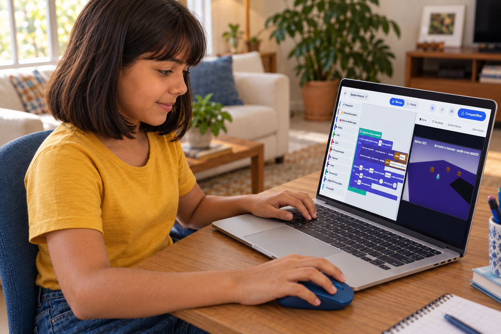

Antes de escolher
Seu filho usa bem o celular.
Para criar na nossa plataforma, ele vai usar computador ou notebook.

Seu filho usa bem o celular.
Para criar na nossa plataforma, ele vai usar computador ou notebook.

A tela precisa mostrar o projeto e as ferramentas de criação.

O mouse ajuda a escolher, arrastar e posicionar cada parte.
O teclado também entra na atividade.

Ele serve para escrever e pode controlar o personagem durante o teste do jogo.
Neste exemplo, o jogador se movimenta com as teclas e olha ao redor com o mouse.


Ao criar, a criança monta e testa essas respostas.
Nossa plataforma funciona pelo navegador, com internet.
Antes de comprar outro aparelho, confira se o computador da família atende à atividade.
Se o computador é compartilhado, combinem um horário para usar.

Ter acesso ao aparelho faz parte de preparar o começo.
Aqui mostramos como as crianças criam jogos na prática.

Siga o perfil para conhecer esse caminho.